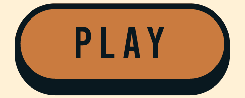

Adroit Studios Projects
Adroit Studios is a serious game lab associated with the University of Missouri. For more information about the studio click here.

Mission Hydrosci
For more information about the game click here.
Demo Video by Carolyn Jarecki
Description:
Students are placed in the role of junior scientists tasked with colonizing an alien planet, WAT247. They must explore uncharted lands and learn about the planet's water systems to solve mysteries and pave the way for survival. Throughout gameplay, students understand the role of water in socio-ecological systems & how to build a convincing scientific argument.
My Role:
I aided in the re-design of Mission Hydrosci to better meet the needs of students and educators. My primary role was ensuring NGSS curriculum alignment and improving the game design and mechanics to meet science learning goals effectively. I worked closely with developers, artists, writers, and other designers to create storyboards and design documentation to ensure smooth implementation of curricular concepts. I also assisted in re-designing a teacher dashboard to enable educators to implement the game into their classrooms more effectively.
vSchool
For more information about the game click here.
Demo Video by Charles Sielert
Description:
An interactive behavioral assessment where middle school students navigate an after-school program and make decisions that test their social skills.
My Role:
I worked as the primary narrative writer on this project, teaming up with prosocial behavioral experts to design a story and dialogue that would feel realistic to middle schoolers, incorporate fun, interactive activities, and test students' ability to have positive social interactions. Additionally, I designed mini-games and created storyboards and character profiles for the developers and artists.
To view a sample narrative document click here.
Kaldi's Human Resources Simulation
For more information about the game click here.

Logo by Kaldi's Coffee Company
Description:
This simulation expands on an existing Adroit project that allows undergraduate students to manage a coffee shop virtually. In the original simulation, students must manage store inventory, set prices, create employee schedules, and more to successfully turn a profit. The human resources expansion seeks to give students the opportunity to interview and hire employees, manage common personnel issues, and encounter the social aspects of running a business.
My Role:
I worked with subject matter experts to create storyboards, design the user interface, and develop activities to meet the course objectives. Additionally, I created extensive character profiles and outlined narrative developments for gameplay.
To view an example storyboard click here.
To play the original Kaldi's Simulation click here.
NutriQuest
For more information about the game click here.

Description:
NutriQuest is a game-based learning intervention that aims to educate middle-school-aged children and their caregivers about the importance of nutrition. NutriQuest is a two-player game that is playable on any device with a web browser. In a mystical land, two characters embark on a survival journey, gathering ingredients and refining their cooking skills to unlock abilities and defeat monsters. Players learn real-world nutrition skills, guiding the characters home and sharing their knowledge with the community.
My Role:
I collaborated with subject matter experts and the Adroit game design and development team to design activities, user interfaces, and mechanics aligned with Biochemistry course standards. In addition, I developed design documentation, created curricular outlines, and supported level design efforts.
ScanBright
For more information about the game click here.
Demo Video by Chelsea Bartlett
Description:
ScanBright is an interactive mobile game platform specifically designed for radiology residents. Its primary goal is to enhance radiology resident education through simulations and learning games. ScanBright draws inspiration from contemporary learning technologies, established educational frameworks, and the latest research in radiology education, aiming to revolutionize the learning experience for radiology residents, starting with the development of the first module, RadSwipe.
My Role:
I worked to bridge the gap between subject matter experts and the Adroit game design and development team, helping to design activities, user interfaces, and mechanics that would allow students to meet learning goals successfully.
Emergence
For more information about the game click here.

3D Model created by Rainer Gardner Olesen
Description:
Emergence is a single-player educational video game for undergraduate students that can be played on any device with a web browser. Players take on the role of a scientist inside a high-tech facility, shrunken to operate within a cell in a patient. Players encounter metabolic needs and crises and seek to restore balance to the cellular environment.
My Role:
I worked to bridge the gap between subject matter experts and the Adroit game design and development team, helping to design activities, user interfaces, and mechanics that would effectively meet SNAP-Ed and National Health Education standards. Additionally, I created design documentation, curricular outlines, and aided with level design.
Fossil Quest



Description
An solo project created using Construct 3 for a graduate level course in game design.
Fossil Quest is a simulation style game that invites players to journey through time and help preserve a rare dinosaur for future generations. Fossil Quest seeks to enhance players' cognitive skills through the application of rules-based knowledge. Simulated role play and examples are used to teach players the conceptual relationship between factors that affect fossilization (such as oxygen, pressure, environment, and specimen composition) and the preservation of a specimen.
To view full design documentation click here.
Geo-Holo


Description
A group project created using Construct 3 for a graduate level course game design. My contributions to this project included prototype development, aligning assessment methods with learning objectives, and conceptual design assistance.
Geo-Holo is a serious game that will help to reinforce the learning objectives presented in an introductory level undergraduate geology course at the University of Missouri. Four learning objectives were identified by our faculty client and our team worked to develop a game to engage learners in exploring these objectives. In Geo-Holo, players are tasked with collecting dinosaur fossils for a new museum using futuristic technology. In the process, the players will learn about basic geologic principles.
To view full design documentation click here.
To Catch a (Food) Thief


Description
An solo project created using Twine as part of a graduate level course in game design.
Use gel electrophoresis to help catch a dastardly food thief!
"To Catch a (Food) Thief" is a serious game designed as part of a pre-lab assignment for introductory Biology students
to complete before they perform an electrophoresis lab in person. Prior to game assignment they
will have read through the preparatory lab materials, and have a basic understanding of the process
of electrophoresis and its role in Biological study.